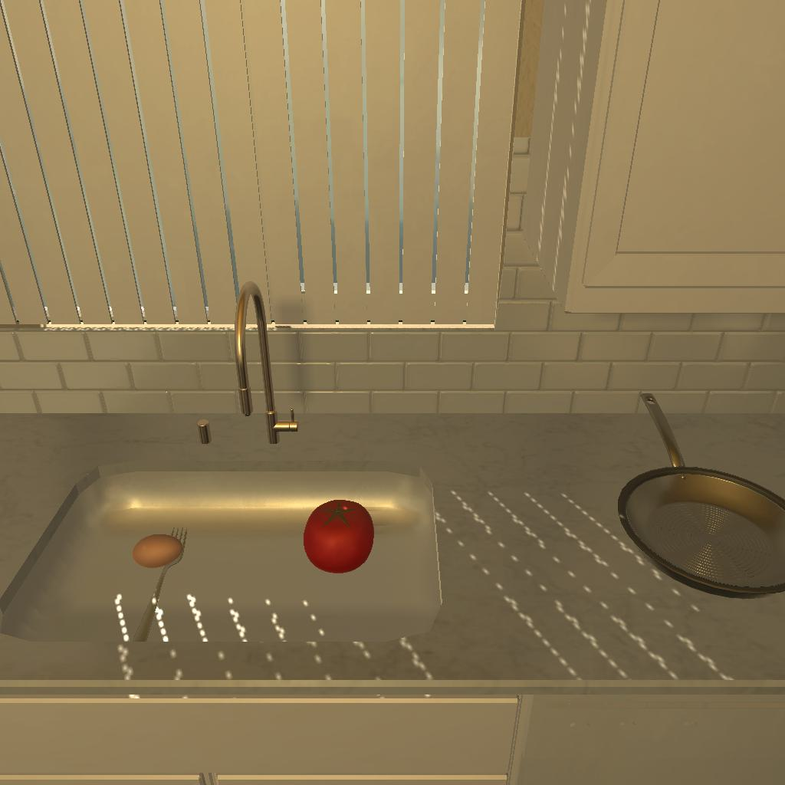

---------------------------------------------------------task: 29---------------------------------------------------------
--------------------------------------------------------------------------------------------------------------------------------------------------------------------
--------------------------------------------------------------------------------------------------------------------------------------------------------------------
Step:--------------------------------------------------------------------------0-------------------------------------------------------------------------------
----------------------------------------
VLM Prompt:
Image1:
**Instruction**
1. Analyze the provided image to identify all visible household objects, focusing on those relevant to the task description "put two tomato in countertop."
2. Use the analysis of the image and the task hint "The agent must find an object of the desired type, pick it up, find the correct location to place it, put it down there, then look for another object of the desired type, pick it up, return to previous location, and put it down there with the other object." to answer the question: what is the most reasonable action in the choices for the task description "put two tomato in countertop"?
4. Decide and write the answer using the template: The answer is: (i): , where i is the real number. If there is no desired object in the image, search every place based on **Initial Observation** to find the object. And if no one is exactly correct, choose a similar answer.
**Initial Observation**
You are in the middle of a room. Looking quickly around you, you can see cabinet (1-20), toaster (1), microwave (1), garbagecan (1), countertop (1-2), drawer (1-4), stoveburner (1-4), sinkbasin (1), sink (1), fridge (1), diningtable (1), coffeemachine (1)
**Answer Choices**
(1): go to cabinet 1
(2): go to cabinet 2
(3): go to cabinet 3
(4): go to toaster 1
(5): go to cabinet 4
(6): go to cabinet 5
(7): go to microwave 1
(8): go to garbagecan 1
(9): go to countertop 1
(10): go to drawer 1
(11): go to cabinet 6
(12): go to cabinet 7
(13): go to drawer 2
(14): go to stoveburner 1
(15): go to stoveburner 2
(16): go to countertop 2
(17): go to cabinet 8
(18): go to cabinet 9
(19): go to cabinet 10
(20): go to drawer 3
(21): go to drawer 4
(22): go to stoveburner 3
(23): go to stoveburner 4
(24): go to cabinet 11
(25): go to cabinet 12
(26): go to cabinet 13
(27): go to cabinet 14
(28): go to sinkbasin 1
(29): go to sink 1
(30): go to cabinet 15
(31): go to fridge 1
(32): go to cabinet 16
(33): go to cabinet 17
(34): go to cabinet 18
(35): go to cabinet 19
(36): go to diningtable 1
(37): go to coffeemachine 1
(38): go to cabinet 20
**Answer**
Let's think step by step by following the instructions.
----------------------------------------
----------------------------------------
Original Response:
Image 1 shows a sink with a tomato and an egg inside it, and a countertop with a sieve placed on it. There is also a window with blinds above the sink, and a tap/faucet.
Based on the task description "put two tomatoes in countertop," the agent must find a tomato, pick it up, and place it on the countertop. Since there is already one tomato in the sink, the agent does not need to search for it in cabinets or other places.
Therefore, the most reasonable action from the choices would be:
(28): go to sinkbasin 1
After picking up the tomato from the sink, the agent should then place it on the countertop. Since it's not specified which countertop to use and there are two mentioned in the initial observation, the agent can choose either. However, since countertop 2 is not visible in the image and countertop 1 is, it's more reasonable to choose the visible one.
So, the next action would be:
(9): go to countertop 1
The answer is: (28): go to sinkbasin 1, and then (9): go to countertop 1.
----------------------------------------
----------------------------------------
>>> Refine Original VLM Response and Get Pure Action: go to sinkbasin 1, and then (9): go to countertop 1
----------------------------------------
-----------------------------------------------------------------
Running time: 12.02196192741394 seconds
Total Money: 10.25045
-----------------------------------------------------------------
-----------------------------------------------------------------
Text Observation:Nothing happens.
-----------------------------------------------------------------
UNSUCCEED